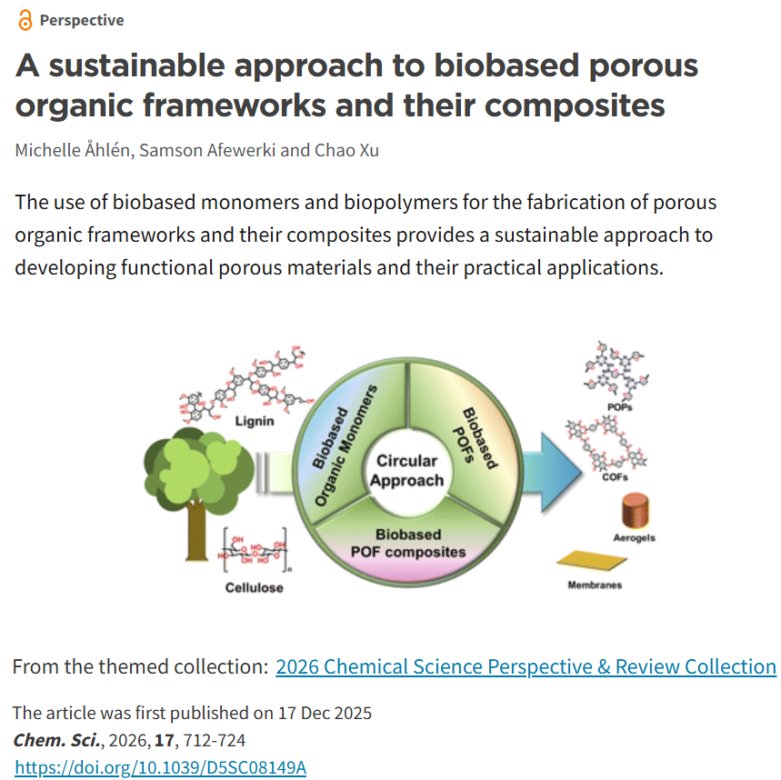
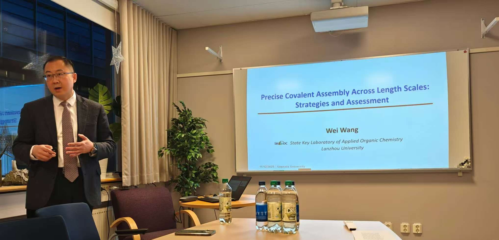
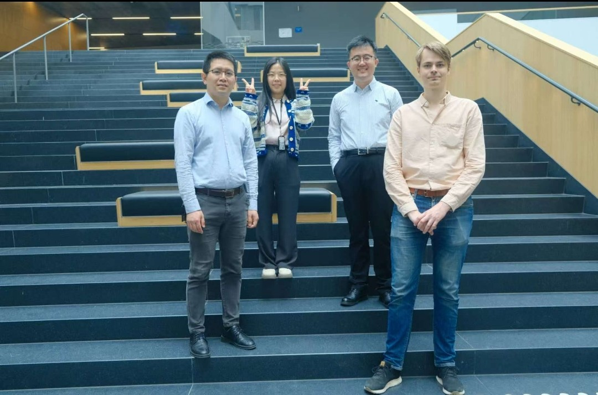

📰 2025.12 Our invited Perspective paper on biobased porous organic frameworks has been published in Chemical Science.

📰 2025.12 Prof. Wei Wang from Lanzhou University, China, has visited our group and gave an invited talk on "Precise Covalent Assembly Across Length Scales: Strategies and Assessment"

📰 2025.11 Congratulations to Dr. Kasper Eliasson on successfully defending his PhD thesis. Many thanks to Prof. Rahul Banerjee for serving as the opponent and to committee members Sascha Ott, Wei Xia, and Erica Zeglio for their valuable contributions.

📰 2025.11 We organized a Symposium on Porous Organic Frameworks at Uppsala University. We enjoyed fantastic talks and inspiring discussions. Sincere thanks to all the speakers and participants for making the event such a success! Rahul Banerjee, Pascal Van Der Voort, Jiayin Yuan, Karl Börjesson, Sascha Ott, Catherine Aitchison, Gang Xu and Daniel Maspoch.

📰 2025.06 Our former group member Dr. Shengyang Zhou, now a PI at Sichuan University, visited us at Ångström Laboratory.
